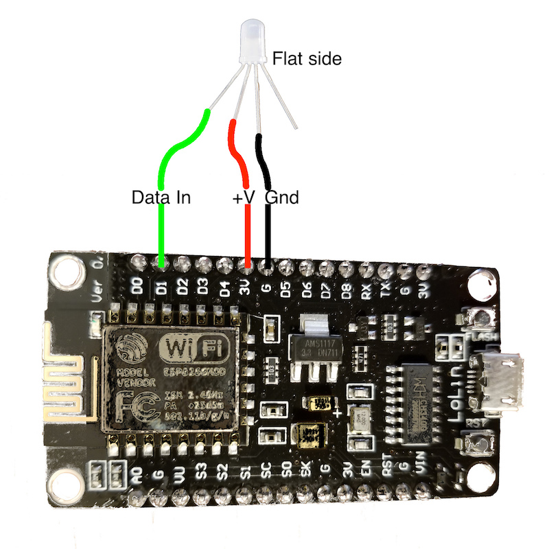

Controlling the RGB LED from the ESP8266¶
Lab Objectives¶
In this Lab you will connect the NeoPixel LED and learn how to control it from the ESP8266. You will learn:
- The electrical connections of the LED and how to connect to the ESP8266
- The library used to control the neopixel
- How to add new libraries to the Arduino IDE
- How to use the neopixel Library and access documentation for additional features
Introduction¶
During the last practical we used the ESPWiFi library that was installed as part of the plugin but now we want to control a neopixel RGB LED that we will connect to the ESP8266. One of the advantages of using Arduino is that there are many libraries available, so most common hardware will usually have an Arduino library available, so you won't need to implement the low-level control protocol for a device.
You need to be careful to ensure that any library you choose supports the hardware you are running on. Initially the Arduino platform was created around AVR microprocessors and many libraries were written to directly interact with AVR processors, so are incompatible when targeting a different processor. Looking at the Arduino ESP8266 documentation there is a list of libraries known to work with ESP8266.
Step 1 - Adding a Library to the Arduino IDE¶
Looking at the list, there is a compatible NeoPixel library available for the neopixel. To install a library into the Arduino IDE you can use the Library Manager. From the menu select Sketch -> Include Library -> Manage Libraries... to bring up the Library Manager. In the search box enter NeoPixel to find libraries matching the search. You can see there are a number of libraries available, but you want to find the Adafruit NeoPixel by Adafruit, then select the entry and click install to install the library. Once the library in installed click close to close the Library Manager.
Step 2 - Connecting the Neopixel to the ESP8266 board¶
Now you need to connect the NeoPixel to the ESP8266. Before you start making any connections please disconnect the device from your laptop/workstation so there is no power getting to the device. You should never make any connection changes when the device is powered on.
Before making the connections we need to identify the 4 connecting pins coming out of the LED. If you examine the rim of the pixel cover you will see that one side is flattened (this should be the opposite side from the shortest pin) - this pin next to the flattened side is the Data Out pin. We will not be using this pin, as we only have a single pixel. You can chain pixels together connecting the Data Out pin to the Data In pin of the next pixel in the chain.
The shortest pin on the Pixel is the Data In The longest pin on the Pixel is Ground The remaining pin is +'ve voltage, which should be 5v, but it works with 3.3v that the ESP8266 board provides.
So, with the shortest pin on the left and the flat side on the right the pinout is (left to right):
- Data In (shortest pin)
- +'ve Voltage
- Gnd (longest pin)
- Data Out (no connection)
You need to connect the Data In, +'ve voltage and ground to the ESP8266 board as shown in the diagram. Take care to ensure that the connections are as shown, as connecting the wrong pins can damage the ESP8266 board and/or the LED:

Step 3 - Load an example sketch¶
Once you have the connections made you can connect the board to your laptop. Load the example sketch strandtest File -> Examples -> AdaFruit Neopixel -> strandtest. You need to make a couple of changes to the example sketch:
- Change the LED_PIN number to 5. D1 on the NodeMCU board maps to GPIO5 on the ESP8266 processor - see the pinout
- Set the number of pixels to 1 in the LED_COUNT definition
- In the loop function comment out the 4 lines starting with theaterChase as these cause rapid flashing when only a single LED is connected, which is not pleasant to look at
When you save the file you should be prompted to save it as a new file (you cannot override example files, so need to save them to another location to be able to modify them).
Compile and upload the sketch to see the LED change colours.
The top of your code should look like this:
#include <Adafruit_NeoPixel.h>
#ifdef __AVR__
#include <avr/power.h> // Required for 16 MHz Adafruit Trinket
#endif
// Which pin on the Arduino is connected to the NeoPixels?
// On a Trinket or Gemma we suggest changing this to 1:
#define LED_PIN 5
// How many NeoPixels are attached to the Arduino?
#define LED_COUNT 1
// Declare our NeoPixel strip object:
Adafruit_NeoPixel strip(LED_COUNT, LED_PIN, NEO_GRB + NEO_KHZ800);
// Argument 1 = Number of pixels in NeoPixel strip
// Argument 2 = Arduino pin number (most are valid)
// Argument 3 = Pixel type flags, add together as needed:
// NEO_KHZ800 800 KHz bitstream (most NeoPixel products w/WS2812 LEDs)
// NEO_KHZ400 400 KHz (classic 'v1' (not v2) FLORA pixels, WS2811 drivers)
// NEO_GRB Pixels are wired for GRB bitstream (most NeoPixel products)
// NEO_RGB Pixels are wired for RGB bitstream (v1 FLORA pixels, not v2)
// NEO_RGBW Pixels are wired for RGBW bitstream (NeoPixel RGBW products)
// setup() function -- runs once at startup --------------------------------
void setup() {
// These lines are specifically to support the Adafruit Trinket 5V 16 MHz.
// Any other board, you can remove this part (but no harm leaving it):
#if defined(__AVR_ATtiny85__) && (F_CPU == 16000000)
clock_prescale_set(clock_div_1);
#endif
// END of Trinket-specific code.
strip.begin(); // INITIALIZE NeoPixel strip object (REQUIRED)
strip.show(); // Turn OFF all pixels ASAP
strip.setBrightness(50); // Set BRIGHTNESS to about 1/5 (max = 255)
}
// loop() function -- runs repeatedly as long as board is on ---------------
void loop() {
// Fill along the length of the strip in various colors...
colorWipe(strip.Color(255, 0, 0), 50); // Red
colorWipe(strip.Color( 0, 255, 0), 50); // Green
colorWipe(strip.Color( 0, 0, 255), 50); // Blue
// Do a theater marquee effect in various colors...
//theaterChase(strip.Color(127, 127, 127), 50); // White, half brightness
//theaterChase(strip.Color(127, 0, 0), 50); // Red, half brightness
//theaterChase(strip.Color( 0, 0, 127), 50); // Blue, half brightness
rainbow(10); // Flowing rainbow cycle along the whole strip
//theaterChaseRainbow(50); // Rainbow-enhanced theaterChase variant
}
Step 4 - Understanding how use the neopixel library¶
To add the NeoPixel to your own application you need to do the following:
- Create an instance of a Neopixel
Adafruit_NeoPixel strip(LED_COUNT, LED_PIN, NEO_GRB + NEO_KHZ800);- The first parameter is the number of pixels in the chain
- the second parameter is the GPIO number the pixel(s) are connected to
- The third parameter allows you to identify what type of pixel is connected. There are a number of different types of pixel. Some include a white LED to give a better white light. Some expect the green data to be sent first whilst others require the red data to be sent first. There are also different communication speeds used.
- Before using any commands to alter the pixels you need to initialise the pixel library using the begin() call.
strip.begin();This is usually done in the setup() function. -
Set the pixels to the desired colours
Note
this doesn't change the pixel colours immediately
- There are a number of calls in the neopixel library to be able to set the colour of a pixel. The first parameter always is the number of the pixel you want to set in the chain (starting with 0 as the first pixel):
setPixelColor(uint16_t n, uint8_t r, uint8_t g, uint8_t b)setPixelColor(uint16_t n, uint8_t r, uint8_t g, uint8_t b, uint8_t w)setPixelColor(uint16_t n, uint32_t c)
- There are 2 ways to specify a colour to the setPixelColor() call. You can pass in the red, green, blue and optionally white values (0 - 255) for each of the LEDs within the pixel or use the Color() function to create a single 32bit integer value representing a colour. This can be useful for passing to and returning from other function calls, as shown in the example sketch:
Color(uint8_t r, uint8_t g, uint8_t b)Color(uint8_t r, uint8_t g, uint8_t b, uint8_t w)
- Call the show() function to send the colour changes to the pixel(s) :
strip.show();. This is the function that actually updates the pixels based on the previous setPixelColor function calls.
- There are a number of calls in the neopixel library to be able to set the colour of a pixel. The first parameter always is the number of the pixel you want to set in the chain (starting with 0 as the first pixel):
For any library installed with the Arduino Library Manager you can get to the documentation for the library using the More info link in the Library Manager: